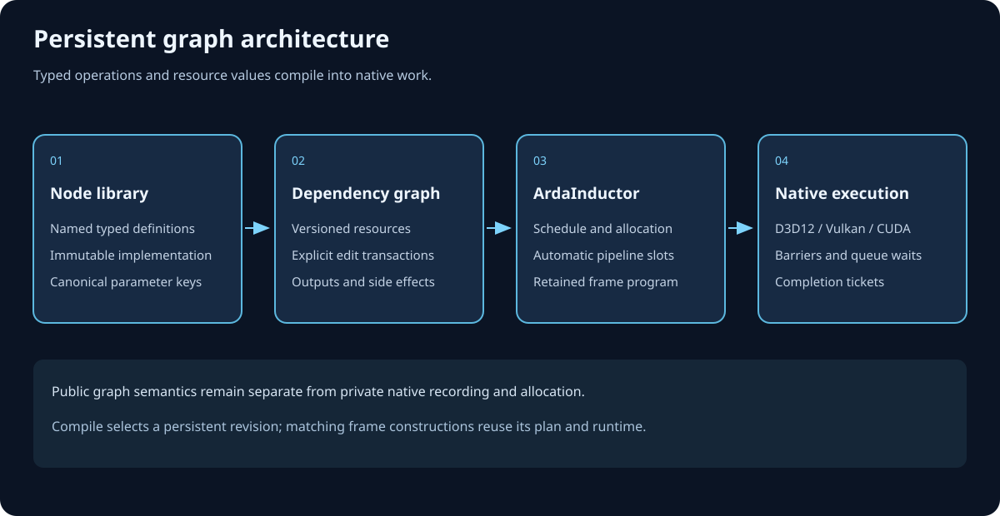
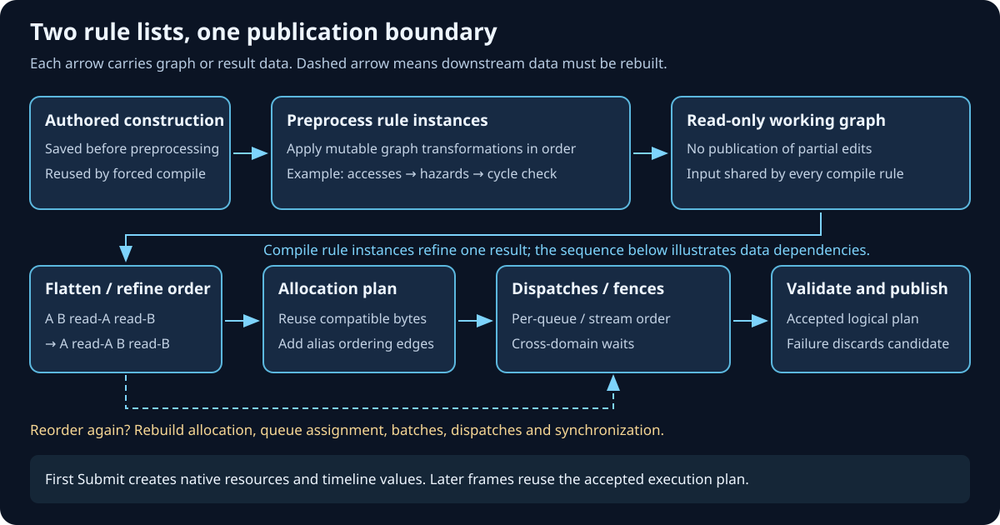
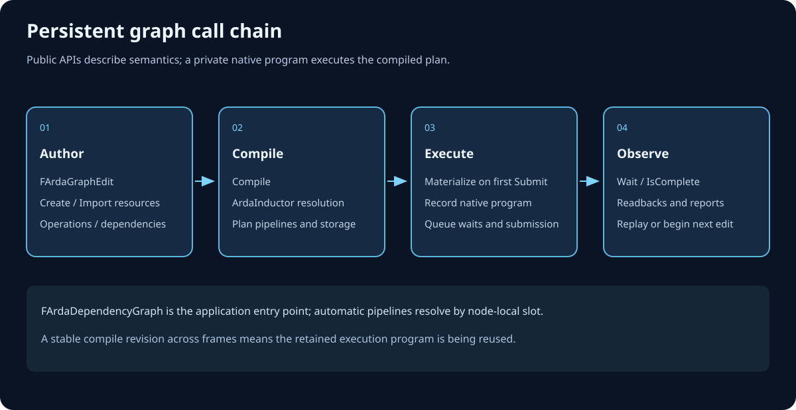

Persistent dependency graphs
Architecture
A persistent semantic graph compiles into a retained native execution program.
Learning objectives
Distinguish node definitions, persistent instances and native plans, and trace their identities and lifetimes.
Definition, instance, plan
FArdaNodeRegistry owns immutable named definitions; graphs own typed instances and snapshots. ArdaInductor resolves edges, culls work, infers pipelines, selects queues and plans storage. Native recording and barrier lowering remain private implementation details.

Source ownership follows the three lifetimes
The module lives in Source/ArdaInfra/ArdaDependencyGraph. Its public entry is ArdaDependencyGraph.h; narrower includes use the owning directory below. Public declarations and private implementations use the same responsibility boundaries, so an implementation detail does not become public just because its source sits beside related interfaces.
| Directory under Public / Private | Responsibility |
|---|---|
Graph/Resources | Logical handles, descriptors, imports and resource resolution contexts. |
Graph/Node | Graph editing, node instances, definitions, registry, parameters, bindings and topology. |
Graph/DefaultNodes | Reusable copy, upload, readback, texture and acceleration-structure operations. |
Inductor/Config | Compilation, scheduling, timing and execution options, ordered rule-instance lists and immutable per-instance configuration. |
Inductor/Rules | Public preprocess and compile rule classes derived from one shared parent, with instance Apply functions and configuration members. Small transformations cover dependencies, culling, pipelines, ordering, memory, queues, CUDA batching, dispatches and fences. |
Inductor/Compiler | Rule orchestration, pipeline inference, common candidate evaluation, compile reports and command lowering. |
Inductor/Runtime | First-submission materialization, frame resources, bindings, native recording, submission, completion and telemetry. |
Graph declarations describe what a resource or operation means. The selected rule program first invokes FArdaGraphPreprocessRule::Apply on a mutable working graph, then FArdaGraphCompileRule::Apply on its read-only view and the current result. The accepted result owns its allocation plan, queue dispatch ordering, CUDA batches and synchronization dependencies. Runtime resolves that plan into physical objects only when first submitted. This separation lets applications compile or inspect a graph without allocating its native buffers and textures. Node attachment can still prepare shaders and intern binding layouts, and compilation may query native requirements; the lazy boundary concerns graph resource and execution-state materialization.
For example, two independent upload nodes and a consumer produce the same dependency constraints under search or a custom ready-list policy. The chosen order may change peak memory and queue overlap, but every policy must preserve those constraints and pass the same memory checks. Runtime receives the accepted plan rather than rerunning an application policy during each frame. See the worked custom-order example.
Stable identities and ownership
Handles contain graph identity, index and generation. Foreign, deleted and abandoned-edit handles are invalid. Instances retain definitions, parameters and imports. Frame slots retain physical storage, CUDA caches, readbacks and timestamps. Tickets retain completion state after slot reuse.
Resource causality
Ordering is determined per overlapping byte or texture-subresource region. A region with one producer orders its readers after that producer, regardless of attachment order. With multiple writer nodes, original successful attachment order fixes overlapping write/write, write/read and read/write hazards. Reads observe the preceding writer; imports may supply initial contents before the first write, while owned reads need prior initialization. Disjoint regions remain independent. Repeated writes use one resource; separate output handles preserve separate values.
Explicit edges add constraints and cannot contradict resource ordering. Pure joins and stage-only nodes contract dependencies without empty GPU submissions. Culling retains ancestors of observable work, including hazard predecessors; it does not eliminate overwritten stores. See the write-read-write example and dependency construction.
Compile and replay
Closed edits join an ordered construction queue. Explicit compilation selects a cached revision or publishes a new one; failed compilation retains the queue for correction or discard. The first submission materializes the pending plan into a retained program, which replays until semantics change. ArdaInductor assigns legal queues, forms CUDA batches and evaluates cost/allocation plans. Stage inference crosses intermediates but stops at upstream consumers of the same pipeline family. The compilation chapter derives each scheduling algorithm and traces the accepted plan into native execution.

Native execution

Submit() first materializes pending resource, pipeline and binding plans, then selects a frame slot and submits ordered native work. Wait() completes tokens and publishes outputs. Execute() performs both. Compilation retires outgoing submissions when switching runtimes; destruction also retires this graph’s outstanding submissions.
External synchronization
Serialize graph edits and submissions. Independent recording waves may run concurrently, so callbacks must avoid unsynchronized shared mutation. Physical reuse needs GPU completion ordering, not merely non-overlapping CPU list positions.
Chapter summary
The persistent graph owns semantics; ArdaInductor derives a retained program whose frame tickets preserve completion lifetime.
Source and API
Read the developer guide, pipeline guide, public API reference and graph declarations.